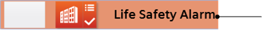
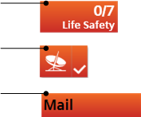
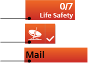
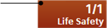
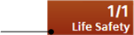
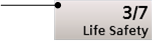
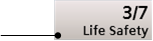
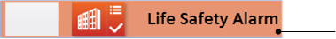

Configuring Event Colors in a Library
You can configure the colors block of an events library. This lets you define additional colors that can be associated to different categories of alarms in the user interface (Event List, event lamps, and so on).
The colors defined in this block become available in the system in addition to those defined in the colors blocks of other libraries (for example, L1-Headquarter > Global > Events). For background information, see Event Colors. For how to associate colors defined here to event types in a schema see Configuring Event Schemas in a Library.
Prerequisites
- You are trained and authorized to handle libraries at the target customization level of the events library whose event colors block you want to modify.
- The events library you are configuring includes the event colors block. If not, see Adding Blocks to a Library.
- System Manager is in Engineering mode.
- System Browser is in Management View.
Add a New Color
- In System Browser, select Project > System Settings > Libraries > L4-Project or L3-Region or L2-Country > Global > Events > Colors.
- Any custom colors already defined in this block are listed under Colors.
- In the Library Configurator tab, click New
 .
. - Select Add New Event Color.
- In the New Object dialog box, enter a name and description (for example, Teal).
NOTE: You cannot repeat a color name that is already used in another library. - Click OK.
- The new event color is added to System Browser under Colors. To configure it, continue to Configure the Gradations of a Color, below.
Configure the Gradations of a Color
- In System Browser, select Project > System Settings > Libraries > L4-Project or L3-Region or L2-Country > Global > Events > Colors > [color].
- The Event Color tab lists the gradations of this color that are used for different interface elements. See the table below for reference. For each item, any configured hexadecimal color code displays alongside.
- To define or change the gradation of this color for a user interface element, enter the hexadecimal color code (for example, #8E4585) in the field alongside it and click Save.
- Repeat this step until a hex color code is defined for all the user interface elements.
Key to the Event Color Tab
The following reference table defines the gradations of this color applied to different user interface elements.
Palette Item | Description | Example of Color |
Text Button Normal | Text color in the event lamp. | |
Text Event Selected | Text color in the event descriptor when the event is selected. |  |
Text Event Normal | Text color in the event descriptor when the event is not selected. | |
Text Event Hover | Text color in the event source (hover). | |
Button Gradient Bright | Bright color gradient that applies at the top of the following buttons:
|  |
Button Gradient Dark | Dark color gradient that applies at the bottom of the following buttons:
|  |
Button Pressed Gradient Bright | Bright color gradient that applies at the top of the event lamp button when clicked. |  |
Button Pressed Gradient Dark | Dark color gradient that applies at the bottom of the event lamp button when clicked. |  |
Button Blinking Bright | Bright color gradient that applies at the top of the event lamp button when flashing. |  |
Button Blinking Dark | Dark color gradient that applies at the bottom of the event lamp button when flashing. |  |
Event Descriptor Selected | Event descriptor color when the event is selected. |  |
Event Descriptor Normal | Event descriptor color when the event is not selected. |